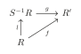
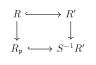
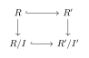
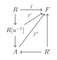

第 8 章：局部化与整相关性
§ 01局部化
定义 1.1
给定环 \(R\)，乘性子集 \(S\subset R\) 使得 \(1\in S\) 且若 \(a,b\in S\) 则 \(ab\in S\)。我们定义 \(R\times S\) 上的等价关系：\((a,s)~(b,t)\leftrightarrow \exists u\in S,(at-bs)u=0\)。由该等价关系导出的等价类记为 \(S^{-1}R\) 称为 \(R\) 对 \(S\) 的分式环(ring of fractions)。
我们记 \((a,s)\) 为 \(\frac{a}{s}\)，分式环的结构由
给出，单位为 \(\frac{1}{1}\)，零元为 \(\frac{0}{S}\)。
例 1.2例
- 若 \(R\) 是整环，取 \(S=R\setminus{0}\)，则 \(S^{-1}R\) 称为 \(R\) 的分式域。
- 设 \(\mathfrak{p}\) 是 \(R\) 的素理想，取 \(S=R\setminus \mathfrak{p}\) 是乘性子集，我们称 \(R_\mathfrak{p}=S^{-1}R\) 是在 \(\mathfrak{p}\) 的局部化(localization)，且 \(I=\left\{\frac{x}{s}\Big| x\in \mathfrak{p},s\in S\right\}\) 是 \(R_\mathfrak{p}\) 的唯一极大理想，且 \(R_\mathfrak{p}/I\cong R/\mathfrak{p}\) 是域。
- \(f\in R,S=\left\{1,f,f^2,\cdots\right\}\)，则 \(S^{-1}R=\left\{\frac{a}{f^n}\Big| a\in R,n\ge 0\right\}\)，记为 \(R_f\)。
我们有自然同态 \(l:R\rightarrow S^{-1}R,x\mapsto \frac{x}{1}\)。
命题 1.3Universal property
设同态 \(f:R\rightarrow R'\) 满足任意 \(s\in S,f(s)\) 均为单位，则存在唯一的同态 \(g:S^{-1}R\rightarrow R'\) 使得 \(f=g\circ l\)。

Fig. 1交换图证明
若 \(g\) 存在，则必须有 \(g(\frac{a}{s})g(s)=g(a)=f(a)\)，故 \(g(\frac{a}{s})=f(a)f^{-1}(s)\)。
现在我们检验 \(g\) 是良定义的，即若 \(u(as'-a's)=0\)，则 \(g(\frac{a}{s})=g(\frac{a'}{s'})\)。这是因为 \(0=f(u(as'-a's))=f(u)(f(a)f(s')-f(a')f(s))=0\) 且 \(f(u)\) 是单位，故 \(f(a)f(s')=f(a')f(s)\)，即 \(f(a)f^{-1}(s)=f(a')f^{-1}(s)\)。同态是容易验证的。
推论 1.4
设同态 \(f:R\rightarrow R'\)，若有：
- \(\forall s\in S\)，\(f(s)\) 是单位；
- 若 \(f(a)=0\)，则存在 \(s\in S,as=0\)；
- \(R'\) 可以写成 \(f(a)f^{-1}(s)\)，其中 \(a\in R,s\in S\)。
则 \(R'\cong S^{-1}R\)。
类似的，设 \(M\) 是一个 \(R-\)模，\(S\) 是 \(R\) 的乘性子集，我们可以定义 \(M\times S\) 上的等价关系：\((a,s)~(b,t)\longleftrightarrow \exists u\in S,(at-bs)u=0\)，则 \(S^{-1}M\) 是该等价关系导出的等价类，可以将 \(S^{-1}M\) 看作一个 \(S^{-1}R-\)模。
命题 1.5
设 \(f:M\rightarrow N\) 是一个 \(R-\)模同态，则 \(f\) 诱导了一个同态 \(S^{-1}f:S^{-1}M\rightarrow S^{-1}N\)。更进一步地，若 \(g:P\rightarrow M\) 是同态，则 \(S^{-1}f\circ S^{-1}g=S^{-1}(f\circ g)\)。
证明
定义 \(S^{-1}f:\frac{a}{s}\rightarrow \frac{f(a)}{s}\)。我们来检验 \(S^{-1}f\) 是良定义的：若 \(\frac{a}{s}=\frac{b}{t}\)，则 \(\exists u\in S,(at-bs)u=0\)，故 \((f(a)t-f(b)s)u=0\)，进而 \(\frac{f(a)}{s}=\frac{f(b)}{t}\in S^{-1}N\)。
注：\(S^{-1}\) 是一个 \(R-\)模范畴映到自身的函子。
命题 1.6
若 \(M'\overset{f}{\rightarrow}M\overset{g}{\rightarrow}M''\) 是正合的，则\(S^{-1}M'\overset{S^{-1}f}{\rightarrow}S^{-1}M\overset{S^{-1}g}{\rightarrow}S^{-1}M''\) 是正合的。特别的，若 \(M'\) 是 \(M\) 的子模，则 \(S^{-1}M'\) 是 \(S^{-1}M\) 的子模。
证明
首先 \(S^{-1}g\circ S^{-1}f=S^{-1}(f\circ g)=0\)，故 \(\mathrm{Im}S^{-1}f\subset \mathrm{ker}S^{-1}g\)。
另一方面，设 \(\frac{a}{s}\in \mathrm{ker}S^{-1}g,\frac{g(a)}{s}=0\in S^{-1}M''\)，则存在 \(u\in S,g(a)u=0\)，即 \(g(ua)=0\in M''\)。由正合性，\(ua=f(b),b\in M'\)，则 \(\frac{a}{s}=\frac{au}{su}=\frac{f(b)}{su}=S^{-1}f(\frac{b}{su})\in \mathrm{Im}S^{-1}f\)。
推论 1.7
设 \(N,P\) 是 \(M\) 的子模，则：
- \(S^{-1}(N+P)=S^{-1}N+S^{-1}P\)；
- \(S^{-1}(N\cap P)=S^{-1}N\cap S^{-1}P\)；
- \(S^{-1}(M/N)\cong S^{-1}M/S^{-1}N\)；
- \(S^{-1}(I\cdot J)=S^{-1}I\cdot S^{-1}J\)，其中 \(I,J\) 是 \(R\) 的理想。
命题 1.8
设 \(R-\)模 \(M\)，则作为 \(S^{-1}R-\)模，\(S^{-1}M\cong M\otimes_R S^{-1}R\)。特别的，\(S^{-1}R\) 是平坦 \(R-\)模。
证明
定义 \(\varphi :M\times S^{-1}R\rightarrow S^{-1}M,(m,\frac{a}{s})\mapsto \frac{am}{s}\) 是 \(R-\)双线性的，故存在 \(R-\)同态 \(f:M\otimes_R S^{-1}R\rightarrow S^{-1}M,m\otimes \frac{a}{s}\mapsto \frac{am}{s}\)，这显然是满射。下证这是单射。
取 \(\sum a_i\otimes \frac{x_i}{s_i}\in M\otimes_R S^{-1}R\)。令 \(s=\prod s_i\)，则
\(a\otimes \frac{1}{s}\in \mathrm{ker}f\Longleftrightarrow \frac{a}{s}=0\in S^{-1}M\Longleftrightarrow\exists u\in S,ua=0\)，则 \(a\otimes \frac{1}{s}=ua\otimes \frac{1}{us}=0\)，故 \(f\) 是单射。
推论 1.9
\(S^{-1}M\otimes_{S^{-1}R}S^{-1}N\cong S^{-1}(M\otimes_R N)\)
证明
由上命题我们有
1.1 局部性质
本节我们讨论模的局部性质：
命题 1.10
\(M\) 是一个 \(R-\)模，则如下命题等价：
- \(M=0\)；
- 对任意素理想 \(\mathfrak{p}\)，\(M_\mathfrak{p}=0\)；
- 对任意极大理想 \(\mathfrak{m}\)，\(M_\mathfrak{m}=0\)。
证明
只需证 \((3)\Longrightarrow (1)\)。设 \(M\neq 0\)，取 \(0\neq a\in M\)，则 \(\mathrm{Ann}(a)\) 是 \(R\) 的真理想，故存在极大理想 \(\mathfrak{m}\supset \mathrm{Ann}(a)\)。由于 \(\frac{a}{1}\neq 0\) 故 \(M_\mathfrak{m}\neq 0\)，矛盾！
命题 1.11
设 \(f:M\rightarrow N\) 是 \(R-\)模同态，则如下命题等价：
- \(f\) 是单(满)射；
- 对任意素理想 \(\mathfrak{p}\)，\(f_\mathfrak{p}:M_\mathfrak{p}\rightarrow N_\mathfrak{p}\) 是单(满)射；
- 对任意极大理想 \(\mathfrak{m}\)，\(f_\mathfrak{m}:M_\mathfrak{m}\rightarrow N_\mathfrak{m}\) 是单(满)射；
证明
我们只证明单射的情形。
注意到 \(0\rightarrow \mathrm{ker}f\rightarrow M\rightarrow N\) 是正合的，故 \(0\rightarrow (\mathrm{ker}f)_\mathfrak{p}\rightarrow M_\mathfrak{p}\rightarrow N_\mathfrak{p}\) 是正合的，即 \((\mathrm{ker}f)_\mathfrak{p}=\mathrm{ker} f_\mathfrak{p}\)。由上命题知 \(\mathrm{ker}f=0\Longleftrightarrow \forall \mathfrak{p},(\mathrm{ker}f)_\mathfrak{p}=0\Longleftrightarrow \forall \mathfrak{p},\mathrm{ker}f_\mathfrak{p}=0\)。
命题 1.12
设 \(M\) 是一个 \(R-\)模，则如下条件等价：
- \(M\) 在 \(R\) 上平坦；
- 对任意素理想 \(\mathfrak{p}\)，\(M_\mathfrak{p}\) 在 \(R_\mathfrak{p}\) 上平坦；
- 对任意极大理想 \(\mathfrak{m}\)，\(M_\mathfrak{m}\) 在 \(R_\mathfrak{m}\) 上平坦。
证明
利用 \(N\otimes _{R_\mathfrak{p}} M_\mathfrak{p}\cong N\otimes_{R_\mathfrak{p}} R_\mathfrak{p}\otimes_R M\cong N\otimes_R M\) 即得。
1.2 理想的局限和扩张
我们来考虑分式环中的理想。
\(f:R\rightarrow R'\) 是环同态。\(I\) 是 \(R\) 的理想，则 \(f(I)\) 生成一个 \(R'\) 的理想，称为 \(I\) 的扩张，记为 \(I^e\)；\(J\) 是 \(R'\) 的理想，则 \(f^{-1}(J)\) 是 \(R\) 的一个理想，称为 \(J\) 的局限，记为 \(J^c\)。容易验证如下性质：
引理 1.13
\(I^{ec}\supset I,I^{ece}=I^e;J^{ce}\subset J,J^{cec}=J^c\)。
由此引理，我们有：
且两者有一一对应。
回忆：对于分式环，我们有自然同态 \(l:R\rightarrow S^{-1}R,x\mapsto \frac{x}{1}\)。
命题 1.14
我们有如下命题：
- \(I\) 是 \(R\) 的理想，则 \(I^e=S^{-1}I\subset S^{-1}R\)；
- \(S^{-1}R\) 任一理想 \(J\) 均为扩张理想，即 \(J^{ce}=J\)；
- \(I\) 是 \(R\) 的理想，则 \(I^{ec}=\cup_{s\in S}(I:s)\)；
- \(I^e=(1)\Longleftrightarrow I\cap S\neq \emptyset\)‘
- \(I\) 是局限理想当且仅当 \(S\) 中元素均非 \(R/I\) 的零因子；
- \(S^{-1}R\) 的素理想和 \(R\) 中与 \(S\) 不交的素理想有一一对应。特别的，\(R_\mathfrak{p}\) 的素理想与 \(R\) 中包含 \(\mathfrak{p}\) 的素理想有一一对应。
- \(S^{-1}\) 对理想的有限和、积、交、根交换。
证明
\((1)\) \(x\in I^e\Longleftrightarrow x=\sum \frac{a_i}{s_i},a_i\in I,s_i\in S\Longleftrightarrow x=\frac{a}{s},a\in I,s\in S\)，即 \(x\in S^{-1}I\)
\((2)\) \(\frac{x}{s}\in J\Longrightarrow \frac{x}{1}\in J\Longrightarrow x\in J^c\rightarrow \frac{x}{s}\in J^{ce}\)。又 \(J^{ce}\supset J\)，故 \(J=J^{ce}\)。
\((3)\) \(x\in I^{ec}\Longleftrightarrow \frac{x}{1}\in I^e=S^{-1}I\Longleftrightarrow \exists a\in I,s\in S,\frac{x}{1}=\frac{a}{s}\)，即 \(\exists u\in S,u(xs-a)=0\)，故 \(xus=au\in I\)，即 \(\exists us\in S,x\in (I:us)\)
\((4)\) \(1\in I^{ec}\Longleftrightarrow \exists s\in S,1\in (I:s)\)，即 \(I\cap S\neq \emptyset\)。
\((5)\) \(I\) 是局限\(\Longleftrightarrow I=I^{ec}\Longleftrightarrow I\supset I^{ec}\)，即(由\((3)\))\(\forall xs\in I\)，我们有 \(x\in I\)，即 \(\forall \bar{x}\bar{s}=0\in R/I\)，\(\bar{x}=0\in R/I\)，即 \(s\) 不是 \(R/I\) 中的零因子。
\((6)\) 一方面，若 \(\mathfrak{q}\) 是 \(S^{-1}R\) 中的素理想，则 \(\forall ab\in \mathfrak{q}^c\)，\(\frac{a}{1}\frac{b}{1}\in \mathfrak{q}\)，故 \(\frac{a}{1}\in \mathfrak{q}\) 或 \(\frac{b}{1}\in \mathfrak{q}\)，即 \(a\in \mathfrak{q}^c\) 或 \(b\in \mathfrak{q}^c\)，这表明 \(\mathfrak{q}^c\) 是素理想，且由 \((2)\) 和 \((4)\) 知 \(\mathfrak{q}^c\cap S=\emptyset\)。
另一方面，若 \(\mathfrak{p}\cap S=\emptyset\) 是 \(S\) 中的素理想，则 \(S^{-1}R/S^{-1}\mathfrak{p}\cong S^{-1}(R/\mathfrak{p})\) 是整环，由于若 \(\frac{a}{s}\frac{b}{t}=0\)，则存在 \(u\in S,uab=0\in R/\mathfrak{p}\)，且由于 \(\mathfrak{p}\cap S=\emptyset\)，故 \(u\neq 0\)，这表明 \(ab=0\)，进而 \(a=0\) 或 \(b=0\)，故 \(\mathfrak{p}^e=S^{-1}\mathfrak{p}\) 是素理想。
\((7)\) 推论2.7中已证明前三者。我们来证明 \(S^{-1}(r(I))=r(S^{-1}(I))\)。
回忆，我们有 \(r(I)=\cap_{I\subset \mathfrak{p}} \mathfrak{p}\)，故 \(S^{-1}(r(I))=\cap_{I\subset \mathfrak{p}} S^{-1}\mathfrak{p}\)。又 \(S^{-1}\mathfrak{p}\) 包含了所有 \(S^{-1}R\) 的素理想，故 \(S^{-1}(r(I))\subset r(S^{-1}I)\)。
另一方面，若 \(\frac{x}{s}\notin S^{-1}(r(I))\)，则存在素理想 \(\mathfrak{q}\supset I,x\notin \mathfrak{q}\)，即 \(\frac{x}{s}\notin S^{-1}\mathfrak{q}\)，则 \(\mathfrak{q}\cap S=\emptyset\)，且 \(\frac{x}{a}\notin r(S^{-1}I)\)。
推论 1.15
设 \(f:R\rightarrow R'\) 是环同态，\(\mathfrak{p}\) 是 \(R\) 的素理想，则 \(\mathfrak{p}\) 是 \(R'\) 中一个素理想的局限当且仅当 \(\mathfrak{p}^{ec}=\mathfrak{p}\)。
证明
只需证“\(\Longleftarrow\)”。
令 \(S=R\setminus \mathfrak{p}\)，\(f(S)\) 是乘性子集，我们有同态 \(l:R'\rightarrow f(S)^{-1}R'\)。令 \(\mathfrak{q}'\) 是 \(\mathfrak{p}^e\) 在 \(f(S)^{-1}R\) 的扩张。由于 \(\mathfrak{p}^{ec}=\mathfrak{p}\)，\(\mathfrak{p}^e\cap S=\emptyset\)，我们有 \(\mathfrak{q}'\neq (1)\in f(S)^{-1}R'\)。设 \(\mathfrak{m}\) 是包含 \(\mathfrak{q}'\) 的极大理想，令 \(\mathfrak{q}=l^{-1}(\mathfrak{m})\)，则 \(\mathfrak{q}\) 是素理想，\(\mathfrak{q}\supset \mathfrak{p}^e\)，\(\mathfrak{q}\cap f(S)=\emptyset\)，故 \(\mathfrak{q}^c \supset \mathfrak{p}\) 且 \(\mathfrak{q}^c\cap S=\emptyset\) 即 \(\mathfrak{q}^c=\mathfrak{p}\)。
§ 02整相关性
定义 2.1
\(R\subset R',x\in R'\) 在 \(R\) 上整(integral over \(R\))，若 \(x\) 是 \(R\) 上某个首一多项式的根。
例 2.2例
\(R\) 中的元素都是 \(R\) 上的整元，\(\mathbb{Q}\) 中在 \(\mathbb{Z}\) 上的整元为 \(\mathbb{Z}\)。
例 2.3例
域 \(F\) 上的代数元是整元。
命题 2.4
设 \(R\subset R'\)，如下命题等价：
- \(x\in R'\) 在 \(R\) 上整；
- \(R[x]\) 是有限生成 \(R-\)模；
- \(R[x]\) 被包含于 \(R'\) 的子环，它是有限生成 \(R-\)模；
- 存在忠实的 \(R[x]-\)模 \(M\) 是有限生成 \(R-\)模。
证明
\((1)\Longrightarrow (2)\)：设 \(x^n+a_{n-1}x^{n-1}+\cdots+a_1x+a_0=0\)，则 \(R[x]\) 由 \(\left\{1,x,\cdots,x^{n-1}\right\}\) 生成。
\((2)\Longrightarrow (3)\Longrightarrow (4)\) 是显然的。
\((4)\Longrightarrow (1)\)：由于 \(xM\subset M\)，由 Caylay-Hamilton 定理，存在 \(a_0,\cdots,a_{n-1}\in R\)，使得 \((x^n+a_{n-1}x^{n-1}+\cdots+a_0)M=0\)。由于 \(M\) 是忠实的，故 \(x^n+a_{n-1}x^{n-1}+\cdots+a_0=0\)。
推论 2.5
\(R'\) 中在 \(R\) 上整的元素构成了 \(R'\) 的一个子环。
证明
首先我们先证明如下引理：
引理 2.6
\(M\) 在 \(B\) 上有限生成，\(B\) 是有限生成 \(R-\)模，则 \(M\) 在 \(R\) 上有限生成。
Lemma's proof
若 \(M\) 在 \(B\) 上由 \(\left\{a_1,\cdots,a_n\right\}\) 有限生成，\(B\) 由 \(\left\{b_1,\cdots,b_m\right\}\) 有限生成，则 \(M\) 在 \(R\) 上由 \(\left\{a_ib_j\right\}\) 有限生成。
推论 2.7
\(a_1,\cdots,a_n\) 在 \(R\) 上整，则 \(R[a_1,\cdots,a_n]\) 是有限生成 \(R-\)模。
由上结论，若 \(x,y\) 是整的，则 \(R[x+y],R[xy]\) 被包含于 \(R[x,y]\subset R'\)，故 \(x+y,xy\) 也是整的。
定义 2.8
\(R\subset R'\)，\(R'\) 中的整元构成的环 \(A\) 称为 \(R\) 在 \(R'\) 中的整闭包(integral closure)。若 \(A=R\) 则称 \(R\) 在 \(R'\) 中整闭的(integrally closed)，若 \(A=R'\) 则称 \(R'\) 在 \(R\) 上整(integral over \(R\))
定义 2.9
\(f:R\rightarrow R'\) 称为整的(integral)，若 \(R'\) 在 \(f(R)\) 上是整的，这时候我们称 \(R'\) 是整\(R-\)代数(integral \(R\)-algebra)。
注：回忆：我们称 \(R'\) 是有限类的(finite type)若存在 \(x_1,\cdots,x_n\in f(R)\)，\(R'\) 中任一元素可以被写成 \(x_1,\cdots,x_m\) 的多项式，称 \(R'\) 是有限的(finite)若它是有限生成 \(R-\)模。若 \(R'\) 是整的且是有限类的，设 \(x_i\) 的极小多项式的次数为 \(d_i\)，则 \(R'\) 由 \(\left\{x_i^{k_i}\right\}_{k_i\le d_i-1}\) 生成，故 \(R'\) 是有限的。反过来，若 \(R'\) 是有限的，由上命题 \(R'\) 是整的。因此：
finite type + integral = finite
命题 2.10
设 \(R\subset R'\)，\(R'\) 在 \(R\) 上整，则如下命题成立：
- 设 \(J\) 是 \(R'\) 中理想，\(I=J^c=J\cap R\)，则 \(R'/J\) 在 \(R/I\) 上整；
- 设 \(S\) 是 \(R\) 中乘性子集，则 \(S^{-1}R'\) 在 \(S^{-1}R\) 上整。
推论 2.11
设 \(R\subset R'\subset R''\)，\(R'\) 在 \(R\) 上整，\(R''\) 在 \(R'\) 上整，则 \(R''\) 在 \(R\) 上整。
证明
设 \(x\in R'',x^n+a_{n-1}x^{n-1}+\cdots+a_0=0\)，\(a_i\in R'\) 在 \(R\) 上整。故 \(R[a_0,\cdots,a_{n-1}]\) 是有限生成 \(R-\)模，故 \(x\) 在 \(R[a_0,\cdots,a_{n-1}]\) 上整，\(R[x,a_0,\cdots,a_{n-1}]\) 在 \(R[a_0,\cdots,a_{n-1}]\) 上有限生成，进而 \(R[x,a_i]\) 在 \(R[a_0,\cdots,a_{n-1}]\) 上有限生成，故 \(x\) 在 \(R\) 上整。
推论 2.12
\(R\subset R'\)，\(S\) 是 \(R\) 的乘性子集。设 \(A\) 是 \(R\) 的整闭包，则 \(S^{-1}A\) 是 \(S^{-1}R\) 的整闭包。
证明
首先我们有 \(S^{-1}A\) 在 \(S^{-1}R\) 上是整的。取 \(\frac{x}{s}\in S^{-1}R'\) 是整的，则有
其中 \(a_i\in R\)。两边乘 \((s\cdot s_1\cdots s_n)^n\) 有：
这表明 \(x\cdot s_1\cdots s_n\)在 \(R\) 上整故属于 \(A\)，进而 \(\frac{x}{s}=\frac{x\cdot s_1\cdots s_n}{s\cdot s_1\cdots s_n}\in S^{-1}A\)。
2.1 上升/下降定理
定理 2.13上升定理
\(R\subset R'\)，\(R'\) 在 \(R\) 上整。设 \(I\) 是 \(R\) 的理想，\(\mathfrak{p}\subset R\) 是包含 \(I\) 的素理想。\(I'\) 是 \(R'\) 的理想满足 \(I'\cap R=I\)。则存在 \(\mathfrak{p}'\) 是 \(R'\) 的素理想满足 \(\mathfrak{p}'\cap R=\mathfrak{p}\)。
为证明该定理，我们先证明若干结论。
命题 2.14
\(R\subset R'\) 是整环，\(R'\) 在 \(R\) 上整，则 \(R\) 是域 \(\Longleftrightarrow\) \(R'\) 是域。
证明
“\(\Longrightarrow\)”：设 \(x\neq 0\in R'\)，有 \(x^n+a_{n-1}x^{n-1}+\cdots+a_0=0\)，不妨 \(a_0\neq 0\)，则 \(x\cdot(x^{n-1}+a_{n-1}x^{n-2}+\cdots+a_1)(-a_0)^{-1}=1\)，故 \(x^{-1}\in R'\)，进而 \(R'\) 是域。
“\(\Longleftarrow\)”：设 \(x\in R\)，则 \(x^{-1}\in R'\)，有 \(x^{-n}+a_{n-1}x^{-n+1}+\cdots+a_0=0\)，故 \(x^{-1}=-a_{n-1}-a_{n-2}x-\cdots-a_{0}x^{n-1}\in R\)，进而 \(R\) 是域。
推论 2.15
\(R\subset R'\)，\(R'\) 在 \(R\) 上整，\(\mathfrak{p}'\) 是 \(R'\) 的素理想，\(\mathfrak{p}=\mathfrak{p}'\cap R\) 是 \(R\) 的素理想。则 \(\mathfrak{p}'\) 是 \(R'\) 的极大理想 \(\Longleftrightarrow\) \(\mathfrak{p}\) 是 \(R\) 的极大理想。更进一步的，若 \(R'\) 的素理想 \(\mathfrak{q}'\) 包含 \(\mathfrak{p}'\)，\(\mathfrak{p}'\cap R=\mathfrak{q'}\cap R=\mathfrak{p}\)，则 \(\mathfrak{p}'=\mathfrak{q}'\)。
证明
第一个部分由 命题 2.22和 命题 2.23 推出。
对于第二个部分，设 \(S=R\setminus \mathfrak{p},S^{-1}R=R_\mathfrak{p}\)。设 \(\mathfrak{n},\mathfrak{p''}\) 分别是 \(\mathfrak{p},\mathfrak{p}'\) 的扩张。回忆 \(\mathfrak{n}\) 是 \(S^{-1}R\) 的极大理想，故 \(\mathfrak{p}''\) 是极大的。类似的，设 \(\mathfrak{q}''\) 是 \(\mathfrak{q}'\) 的扩张，则 \(\mathfrak{q''}\) 也是极大的且 \(\mathfrak{q}''\supset \mathfrak{p}''\)，故 \(\mathfrak{p}''=\mathfrak{q}''\)，由命题 2.20知 \(\mathfrak{p}'=\mathfrak{q}'\)。

Fig. 2交换图推论 2.16
\(R\subset R'\)，\(R'\) 在 \(R\) 上整，\(\mathfrak{p}\) 是 \(R\) 的素理想，则存在 \(R'\) 的素理想 \(\mathfrak{p}'\)，\(\mathfrak{p}'\cap R=\mathfrak{p}\)。
证明
同样考虑 \(S=R\setminus \mathfrak{p}\)，令 \(\mathfrak{n}\) 是 \(S^{-1}R'\) 的极大理想，由上推论我们有 \(\mathfrak{m}=n\cap S^{-1}R\) 是极大的。注意到 \(S^{-1}R\) 是局部环且其极大理想为 \(S^{-1}\mathfrak{p}\)，故 \(\mathfrak{m}=S^{-1}\mathfrak{p}\)。取 \(\mathfrak{p}\) 为 \(\mathfrak{n}\) 的局限即有素理想 \(\mathfrak{p}'\) 满足 \(\mathfrak{p}'\cap R=\mathfrak{p}\)。
proof of going-up
回忆 \(R'/I'\) 在 \(R/I\) 上整，\(\bar{\mathfrak{p}}\) 是 \(R/I\) 的素理想。由上推论存在 \(R'/I'\) 中的素理想 \(\overline{\mathfrak{p}'}\)，\(\overline{\mathfrak{p}'}\cap R/I=\overline{\mathfrak{p}}\)。我们提升 \(\overline{\mathfrak{p}'}\) 至 \(\mathfrak{p}'\subset R'\)，则 \(\mathfrak{p}'\) 是素理想，\(\mathfrak{p}'\supset I'\)，\(\mathfrak{p}'\cap R=\mathfrak{p}\)。

Fig. 3交换图定义 2.17
设 \(R\) 是整环，\(K\) 是 \(R\) 的分式域，则 \(R\) 称为整闭的若 \(R\) 在 \(K\) 中整闭。
例 2.18例
\(UFD\) 是整闭的。
整闭是一种局部性质：
命题 2.19
\(R\) 是整环，则如下命题等价：
- \(R\) 是整闭的；
- 对任意素理想 \(\mathfrak{p}\)，\(R_p\) 是整闭的；
- 对任意极大理想 \(\mathfrak{m}\)，\(R_m\) 是整闭的。
证明
设 \(K\) 是 \(R\) 的分式域，\(A\subset K\) 是 \(R\) 在 \(K\) 中的整闭包。由命题 2.22，\(A_\mathfrak{p}\) 是 \(R_\mathfrak{p}\) 在 \(K_\mathfrak{p}=K\) 中的整闭包。\(R\) 是整闭的当且仅当 \(f:A\rightarrow R\) 是满射；\(R_\mathfrak{p}\) 是整闭的当且仅当 \(f_\mathfrak{p}\) 是满射。结合命题 2.18即证。
定义 2.20
对理想 \(I\subset R\subset R'\)，\(x\in R'\) 称为在 \(I\) 上整(integral over \(I\))，若存在 \(a_i\in I\) 满足 \(x^n+a_1x^{n-1}+\cdots+a_n=0\)。这样的元素构成了 \(I\) 的一个整闭包(这不一定构成环)。
命题 2.21
\(R\subset R'\)，\(A\) 是 \(R\) 的整闭包。设 \(I^e\) 是 \(I\) 在 \(A\) 中的扩张，则 \(I\) 在 \(R'\) 中的整闭包是 \(r(I^e)\)。特别的，\(I\) 的整闭包在加法和乘法运算下封闭。
证明
设 \(x\in R'\) 是 \(I\) 上的整元，则存在 \(a_i\in I\)，\(x^n+a_1x^{n-1}+\cdots+a_n=0\)，则 \(x^i\in A\)，故 \(x^n=-a_1x^{n-1}-\cdots-a_n\in I^e\)，即 \(x\in r(I^e)\)。
反过来，若 \(x\in r(I^e)\)，则存在 \(n\)，\(x^n\in I^e\)。设 \(x^n=a_1x_1+\cdots+a_nx_n\)，其中 \(a_i\in A\)，\(x_i\in I\)。考虑 \(M=R[a_1,\cdots,a_n]\) 是有限生成 \(R-\)模，\(x^nM\subset IM\)，则由 Cayley-Hamilton 定理，\(x^n\) 是 \(I\) 上的整元，故 \(x\) 是 \(I\) 上的整元。
命题 2.22
\(R\subset R'\) 是整环，\(R\) 是整闭的，\(K\) 是 \(R\) 的分式域。令 \(x\in R'\) 是 \(I\subset R\) 上的整元，则 \(x\) 在 \(K\) 上的极小多项式形如 \(x^n+a_1x^{n-1}+\cdots+a_n\)，其中 \(a_i\in r(I)\subset R\)。
证明
设 \(L=K[x_1,\cdots,x_n]\) 是 \(g(x)=x^n+a_1x^{n-1}+\cdots+a_n\) 的分裂域。注意到我们有 \(h(x)=x^m+b_1x^{m-1}+\cdots+b_m=0,b_i\in I\)，故 \(g(x)\mid h(x)\)。则 \(h(x_i)=0\)，即 \(x_i\) 是 \(I\) 上整元。由上引理我们有 \(x_i\in r(I^e)=r(I)\)，由韦达定理有 \(a_i\in r(I)\)。
定理 2.23下降定理
\(R\subset R'\) 是整环，\(R\) 是整闭的，\(R'\) 在 \(R\) 上整。若有素理想 \(\mathfrak{q}\subset \mathfrak{p}\subset R\)，且素理想 \(\mathfrak{p}'\subset R'\)，\(\mathfrak{p}'\cap R=\mathfrak{p}\)，则存在 \(R'\) 的素理想 \(\mathfrak{q'}\subset \mathfrak{p}'\)，\(\mathfrak{q}'\cap R=\mathfrak{q}\)。
证明
考虑 \(R\subset R'\subset R_{\mathfrak{p}'}'\)，我们来证明 \(\mathfrak{q}\) 是 \(R_{\mathfrak{p}'}'\) 的一个局限理想。由推论 2.9知只需证明 \(\mathfrak{q}R_{\mathfrak{p}'}'\cap R\supset \mathfrak{q}\)。首先显然 \(\mathfrak{q}R_{\mathfrak{p}'}'\cap R\supset \mathfrak{p}\)。
对任意 \(\frac{x}{s}\in \mathfrak{q}R_\mathfrak{p}'\cap R,x\in \mathfrak{q}R',s\in R'\setminus \mathfrak{p}'\)，则由于 \(\mathfrak{q}R'\subset r(\mathfrak{q}^e)\)，\(x\) 在 \(\mathfrak{q}\) 上整。令 \(K\) 是 \(R\) 的分式域，由命题 2.26知 \(x\) 在 \(K\) 上的极小多项式形如 \(x^n+a_1x^{n-1}+\cdots+a_n\)，其中 \(a_i\in r(\mathfrak{q})=\mathfrak{q}\)。
由于 \(s=\frac{s}{x}\cdot x\)，故 \(s\) 在 \(K\) 上的极小多项式形如 \(s^r+a_1(\frac{s}{x})s^{r-1}+\cdots+a_n(\frac{s}{x})^n\)。因为 \(s\) 在 \(R\) 上整，由命题 2.26我们有 \(a_i(\frac{s}{x})^i\in R\)。注意到 \(a_i(\frac{s}{x})^i\cdot (\frac{x}{s})^i=a_i\in \mathfrak{q}\)，若 \(\frac{x}{s}\notin \mathfrak{q}\)，则 \(a_i(\frac{s}{x})^i\in \mathfrak{q}\Longrightarrow s^r\in \mathfrak{q}R'\subset \mathfrak{p}R'=\mathfrak{p}'\Longrightarrow s\in \mathfrak{p}'\)，矛盾！
现在设 \(\mathfrak{q}=\mathfrak{q}''\cap R\)，则 \(\mathfrak{q}'\) 是 \(R'\) 的素理想，由命题 2.20知 \(\mathfrak{q}'\subset \mathfrak{p}'\)，且 \(\mathfrak{q}'\cap R=\mathfrak{q}\)。
2.2 赋值环
定义 2.24
设 \(R\) 是整环，\(K\) 是 \(R\) 的分式域。\(R\) 称为 \(K\) 的赋值环(valuation ring)，若对任意 \(x\in K\)，\(x\in R\) 或 \(x^{-1}\in R\)。
注：令 \(U\) 为 \(R\) 的所有单位，考虑自然映射 \(\nu:K^*\rightarrow K^*/U\)。则我们可以定义其上序关系：\(x\ge y\) 当且仅当 \(x=yr\)，其中 \(r\in R\)，即 \(xy^{-1}\in R\)。容易验证序关系是良定义的，且若 \(R\) 是赋值环，则这个序是完备的。
命题 2.25
\(R\) 是赋值环，则如下命题成立：
- \(R\) 是局部环；
- 若 \(R\subset R' \subset K\)，则 \(R'\) 是赋值环；
- \(R\) 是整闭的。
证明
\((1)(2)\) 是显然的。
\((3)\)：若 \(x\in K\) 在 \(R\) 上整，设 \(x^n+a_1x^{n-1}+\cdots+a_n=0\)，\(a_i\in R\)。若 \(x\notin R\)，则 \(x^{-1}\in R\)，故 \(x=-a_1-a_2x^{-1}-\cdots-a_nx^{1-n}\in R\)，矛盾。
推论 2.26
若 \(R\) 是赋值环，则对任意 \(S\)，\(S^{-1}R\) 是赋值环。
证明
由 \(R\subset S^{-1}R\subset K\) 即得。
定理 2.27
设 \(R\) 是域 \(K\) 的子环，\(\bar{R}\) 是 \(R\) 在 \(K\) 中的整闭包，则
证明
一方面若 \(x\in \bar{R}\)，则 \(x\) 在 \(R\) 上整，故 \(x\) 在任意赋值环 \(A\supset R\) 上整。由于 \(A\) 是整闭的，故 \(\bar{R}\subset \cap_A A\)。
另一方面，下次再写。
命题 2.28
\(R\subset R'\) 是整环，\(R'\) 在 \(R\) 上有限生成。取 \(0\neq u'\in R'\)，则存在 \(0\neq u\in R\) 使得对任意同态 \(f:R\rightarrow F\)，其中 \(F\) 是代数闭域，满足 \(f(u)\neq 0\)。则 \(f\) 可被延拓至 \(f':R'\rightarrow F\) 使得 \(f'(u')\neq 0\)。
证明
由归纳我们可以假设 \(R'\) 仅由 \(x\) 生成。
若 \(x\) 在 \(R\) 上超越。令 \(u'=a_nx^n+\cdots+a_0\)，取 \(u=a_n\)。对任意 \(f(a_n)\neq 0\)，我们可以取 \(f(x)\in F\) 不是 \(f(a_n)X^n+\cdots+f(a_0)=0\) 的根。我们这样扩张 \(f\)：
则由定义 \(f(u')\neq 0\)。
若 \(x\) 在 \(R\) 上代数。则 \(u'\) 在 \(R\) 上代数。令 \(K\) 是 \(R\) 的分式域，则 \(u'^{-1}\) 在 \(K\) 上是代数的。故存在 \(b_i,c_i\in R\)，\(b_nx^n+\cdots+b_0=0\)，\(c_mu'^{-m}+\cdots+c_0=0\)。取 \(u=b_nc_m\in R\)，则对任意 \(f:R\rightarrow F\)，\(f(u)=\neq 0\)，我们可以将其扩张为 \(f':R[u^{-1}]\rightarrow F,f'(u^{-1})=f(u)^{-1}\)。在定理 2.5的证明中我们找到了 \(R[u^{-1}]\) 的分式域 \(K\) 上的赋值环 \(A\)，\(A\supset R[u^{-1}]\)，\(f'\) 可以扩张为 \(f'':A\rightarrow F\)。\(x\) 在 \(R[u^{-1}]\) 上整，故由定理 2.5，\(x\in A\)，即 \(R'\subset A\)，特别的 \(u'\in A\)。由于 \(u'^{-1}\) 在 \(R[u^{-1}]\) 上整，同理 \(u'^{-1}\in A\)，故 \(u'\) 是 \(A\) 中的单位。即 \(f''(u')\neq 0\)。现在取 \(f''\) 在 \(R'\) 上的限制我们就完成了证明。

Fig. 4交换图推论 2.29Hilbert's Nullstellensatz
- 设 \(k\) 是域，\(R\) 是有限生成 \(k-\)代数。若 \(R\) 是域，则 \(R\) 是 \(k\) 的有限扩张；
- 若 \(k=\bar{k}\)，则 \(k[x_1,\cdots,x_n]\) 的极大理想形如 \((x_1-a_1,\cdots,x_n-a_n),a_i\in k\)。
证明
\((1)\)：取 \(u'=1\)，则任意 \(k\rightarrow \bar{k}\) 可被扩张为 \(R\rightarrow \bar{k}\)。设 \(R\) 由 \(a_1,\cdots,a_n\)，则 \(a_i\) 是代数的，故 \(R\) 是有限扩张。
\((2)\)：考虑 \(k[x_1,\cdots,x_n]/\mathfrak{m}\)，由 \((1)\) 这是一个 \(k\) 的有限扩张，即 \(k[x_1,\cdots,x_n]/\mathfrak{m}\cong k\)。故对任意 \(x_i\)，存在 \(a_i,\bar{x}_i=\bar{a}_i\)，即 \(x_i-a_i\in \mathfrak{m}\)，故 \(\mathfrak{m}\supset (x_1-a_1,\cdots,x_n-a_n)\)。
相反的，考虑 \(f:k[x_1,\cdots,x_n]\rightarrow k,p(x_1,\cdots,p_n)\mapsto p(a_1,\cdots,a_n)\)，显然有 \(\ker f=(x_1-a_1,\cdots,x_n-a_n)\) 是极大理想。
评论